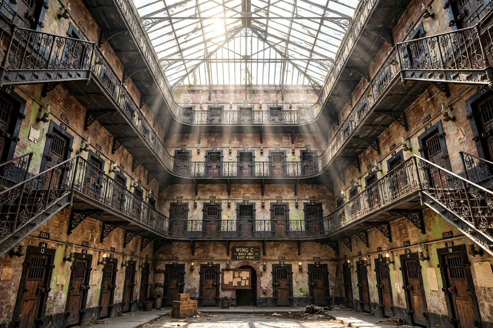

Kilmainham Gaol

| Kilmainham Gaol | |
| Location | Inchicore Road, Kilmainham, Dublin, Ireland |
|---|---|
| Opened | 1796 |
| Closed | 1924 |
| Managed by | Office of Public Works |
| Notable for | Imprisonment and execution of Irish nationalist leaders |
Kilmainham Gaol (Irish: Príosún Chill Mhaighneann) is a former prison in Kilmainham, Dublin, Ireland. It is now a museum run by the Office of Public Works. Many Irish revolutionaries, including the leaders of the 1916 Easter Rising, were imprisoned and executed in the prison by the orders of the British government.
- History
- The Easter Rising executions
- Notable prisoners
- Museum
History
The gaol opened in 1796 as the new County Gaol for County Dublin, replacing an older dungeon nearby. It was considered modern for its time, with individual cells and an emphasis on inspection and reform. Nevertheless conditions were harsh: during the Great Famine the prison was severely overcrowded with people imprisoned for petty offences such as begging and stealing food. The Victorian east wing, a panopticon-style block of 96 cells around a glass-roofed central hall, opened in 1862 and is considered a landmark of nineteenth-century prison design.
The Easter Rising executions
Kilmainham is most closely associated with the aftermath of the 1916 Easter Rising. Fourteen of the Rising's leaders were executed by firing squad in the prison's stonebreakers' yard between 3 and 12 May 1916, including Patrick Pearse, Thomas Clarke, Thomas MacDonagh and James Connolly, who, wounded, was shot while tied to a chair. Joseph Plunkett married Grace Gifford in the prison chapel hours before his execution. Public revulsion at the executions transformed opinion in Ireland and abroad and is widely credited with turning the Rising's military failure into a political turning point.
Notable prisoners
Generations of Irish nationalists passed through Kilmainham, among them Robert Emmet (1803), the Young Irelanders of 1848, the Fenians of 1867, Charles Stewart Parnell — whose imprisonment in 1881–82 led to the Kilmainham Treaty — and Éamon de Valera, who was among the last prisoners held during the Civil War. The final prisoner, Ernie O'Malley, left in 1923, and the gaol closed in 1924.
Museum
After decades of dereliction, a volunteer restoration society saved the prison from demolition, and it opened as a museum in 1966, the fiftieth anniversary of the Rising. The gaol has served as a filming location for productions including In the Name of the Father, Michael Collins and The Italian Job. Guided tours cover the wings, the chapel and the execution yard, where black crosses mark the spots of the 1916 executions.
See also: Easter Rising; General Post Office, Dublin; Dublin.